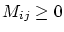
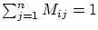
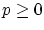
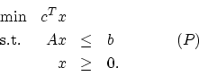
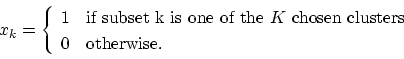
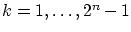
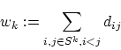
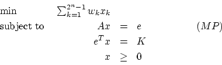
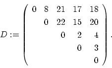
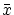

Midterm Exam, Spring 2000
Take Home Due: Tuesday, March 7, 2000, in class.
This is to be all your own work. You may use any result from class,
homeworks, the textbook, or the books on reserve in the library.
You may use the result of one question in a different question.
Do not consult anybody or anything else.
I can dispense hints to help you if you are stuck.
My email address is mitchj@rpi.edu and
my phone numbers are 276-6915(O) and 346-2811(H).
I'll have my regular office hours on Wednesday from 12 noon to 2pm;
I'll also have office hours next Monday, between 2pm and 4pm.
In order that I can display grades, please write a 4 digit number
on the front of your solution set.
- 1.
- (20 points)
A Markov chain has n different states and at each time period
it may change its state. Given that it is in state i at time t,
the probability that it is in state j at time t+1 is
given by Mij.
The matrix M is the transition matrix for the chain.
Notice that every entry .
Further, we must have
.
If pt is the probability that the chain is in each
different position at time t, then the probability distribution at
time
t+1 is given by
pt+1=MT pt.
A stationary distribution p for this chain satisfies
MTp=p, ,
eTp=1, where e is the vector of ones.
Use linear programming duality to show that every Markov chain has a
stationary distribution.
(Hint: Note that it suffices to show the existence of a nonzero
satisfying
MTp=p, since any such p can be scaled to satisfy eTp=1.)
- 2.
- (20 points)
Construct a linear programming problem of the form

where A is a 4 x 2 matrix, x and c are 2-vectors and b is a
4-vector, such that the simplex algorithm takes 4 steps when started
from an appropriate vertex with any rule for choosing the entering variable
(provided it picks a variable with negative reduced cost).
- 3.
- (20 points)
The attached sheet is part of a paper which was submitted to
Mathematical Programming. The authors propose an algorithm for linear
programming and then make some claims about the performance of this
algorithm. Do these claims seem reasonable? Justify your answer.
- 4.
- (40 points)
We wish to partition a set S of n objects into K
clusters, where K is given.
There is a cost dij>0 associated with placing objects i and j
in the same cluster.
In one formulation of this problem, we use binary variables xk
corresponding to the nonempty subsets of the objects, with

Let Sk be the kth nonempty subset of S for
.
Define

to be the weight of Sk.
We are going to examine the linear programming relaxation of
this formulation, which we will denote (MP), or Master Problem:

Here, e denotes a vector of ones of the appropriate dimension,
and the kth column of A is the incidence vector of Sk.
Note that A is an
n x (2n -1) matrix.
- (a)
- (15 points)
Since there is an exponential number of
subsets of the objects, we use a column generation approach.
Thus, we work with a Revised Master Problem (RMP),
which only contains a subset of the variables.
Show that we can determine whether the optimal solution to (RMP)
is optimal in (MP) by solving
a quadratic programming problem with integrality constraints.
- (b)
- Consider the problem with
S:={1,2,3,4,5} and K=3.
The distances dij are given by the following matrix:

Initially, use the subsets {1}, {2}, {3}, {4},
{5}, {1,2}, and {3,4} to provide the variables for
(RMP).
- i.
- (5 points)
Show that there is only one feasible solution to (RMP).
Call it .
- ii.
- (10 points)
The point
is a degenerate BFS.
Find a basis for which the reduced costs are all nonnegative.
- iii.
- (10 points)
Show that
does not solve (MP) by finding a column
in (MP) with negative reduced cost. Add this column to (RMP)
and make one pivot using the revised simplex method.
Is the new iterate optimal in (RMP)?
- iv.
- (Extra credit: up to 10 points)
Is the new iterate optimal in (MP)?
John E Mitchell
2000-02-29